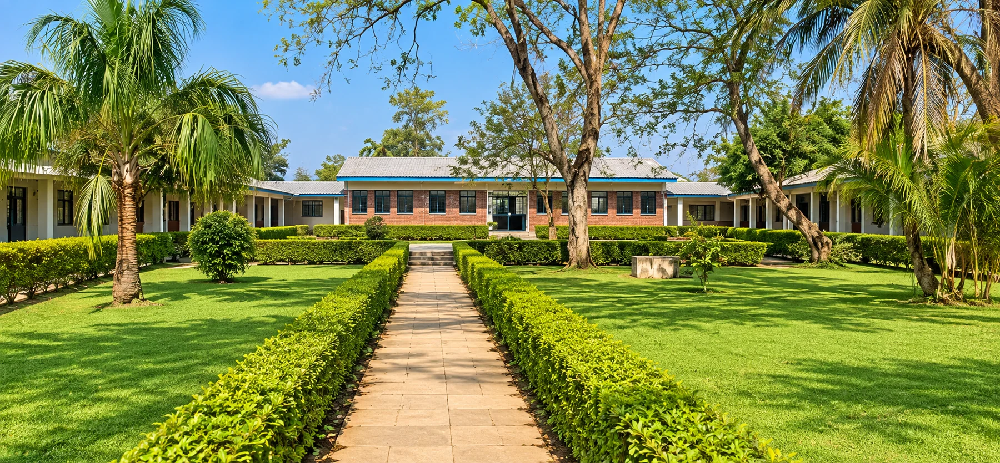
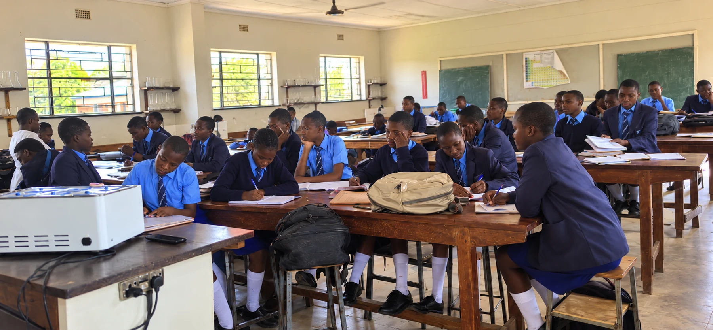
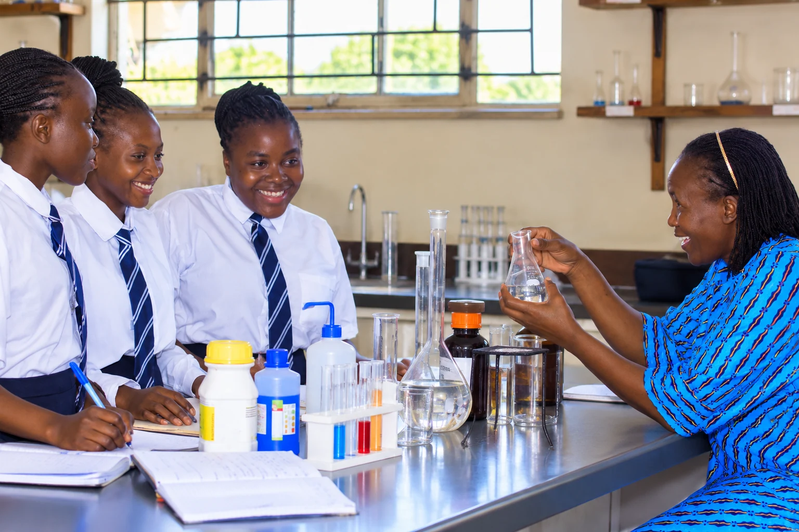
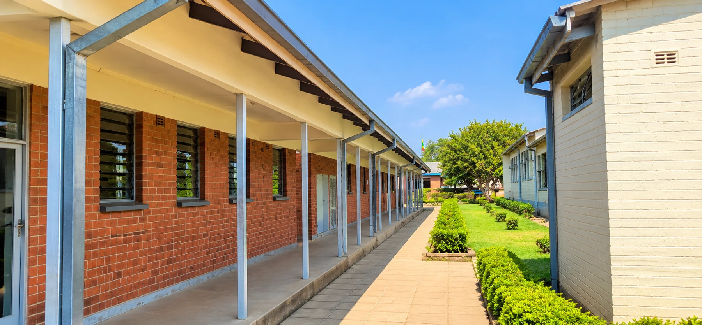
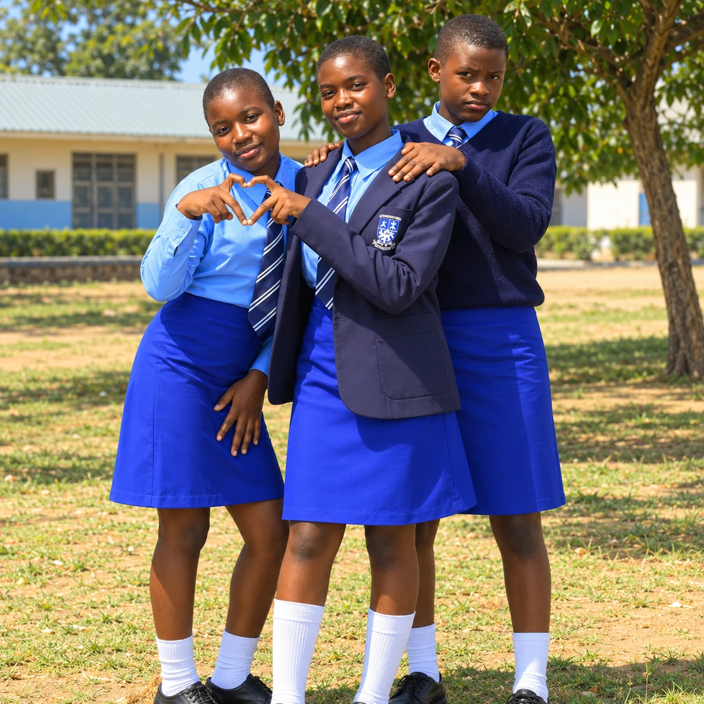
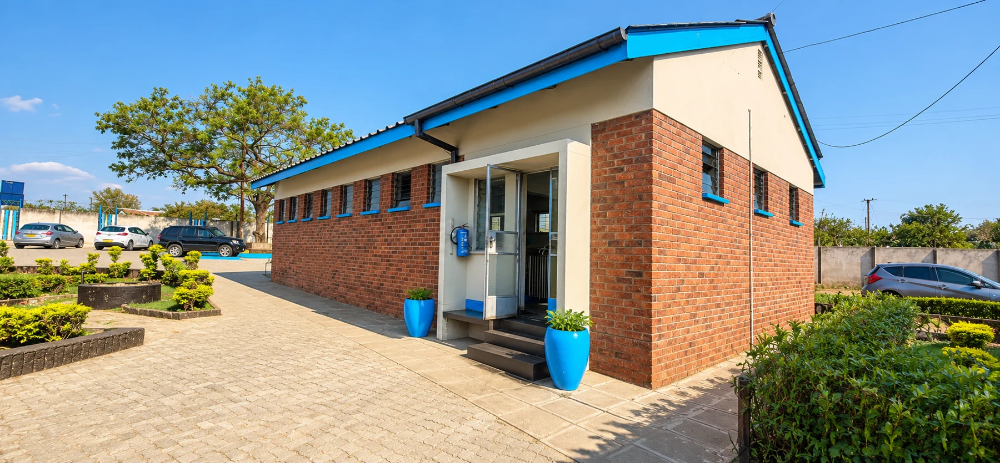

A closer look
Take a look around.
Classrooms, shared spaces and everyday moments. Discover Mucheke, one stop at a time.
Start exploring ↓Welcome to Mucheke
An introduction to school life
Start with the spaces that bring a school together: courtyards, paths and shared places to pause between lessons. Explore at your own pace using the stops below.
Next stop ↓
02 / 06In the classroom
Space to focus
Lessons bring together explanation, discussion and independent work. Explore our academics guide for the journey from junior secondary to O Level and A Level.
Next stop ↓
03 / 06Learning by doing
Inside the science laboratory
Practical learning connects ideas with observation. Laboratory sessions encourage careful work, questions and respect for equipment and safety instructions.
Next stop ↓
04 / 06Between lessons
Around the school
Moving between classrooms is part of the rhythm of the school day. These shared spaces connect learners, teachers and the subjects they study.
Next stop ↓
05 / 06Beyond the timetable
Friendship and belonging
School life is also about the people you meet. Friendships, clubs and shared interests help learners develop confidence and feel part of a community.
Next stop ↓
06 / 06Your next step
Visit us in person
A photo tour is a starting point. Contact the school office to ask about visiting, discuss admissions and confirm the information you need before coming to school.
Arrange a visit →